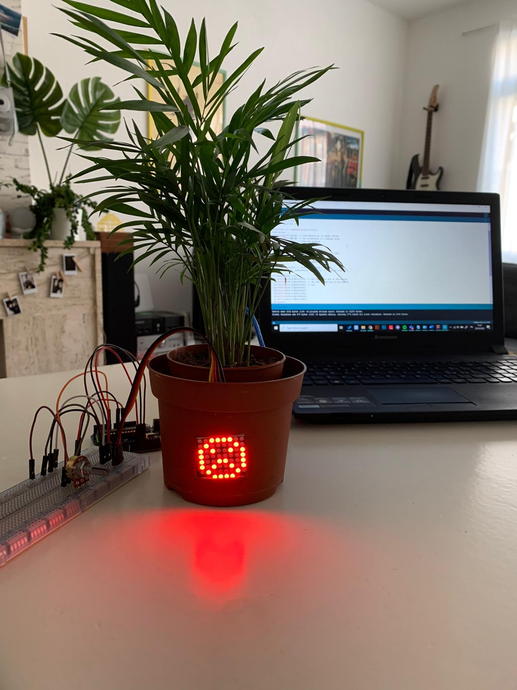
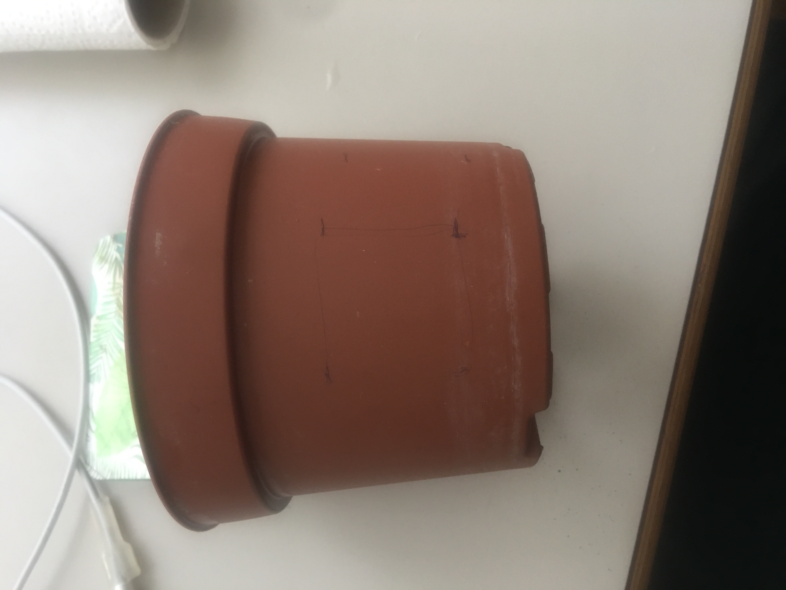
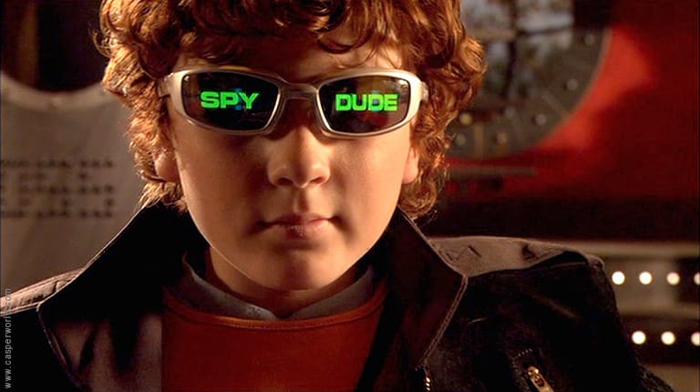

RESEARCH
Camille Utterback’s artworks
Official Website: http://camilleutterback.com/
Camille Utterback is an interactive artist who created several interactive installations in the past two decades. Some of her projects are integrated in the public spaces and they represent the bridge between physical bodies and the digital realm.
Among the projects that most grasped my attention, I think it’s worth mentioning her collaboration with Romy Achituv, “Text Rain” created in 1999. Here is the link to the video: https://www.youtube.com/watch?v=f_u3sSffS78
Participants can play and interact with letters falling from the “sky” through their projected figure on the screen. The letters respond to their movements. The engaging part is that sometimes it’s even possible to collect certain letters to then create a whole word.
I love how this projects connects art, technology and poetry while engaging its participants with a playful and simple interface.
Abundance is a public installation by Camille Utterback and it’s placed in the city hall square in San Jose, California. Through a video camera, pedestrians’ movements are detected and then projected real time on a building’s wall, creating a playful and dynamic response to people’s motion.
Here is the video:
youtube.com/watch?v=xgRFUsVVb84
What is very fascinating in both projects is the translation of regular humans’ behaviours into digital signals. Not only do these installations enhance the urban area, but they also enhance people’s day life.
Interactive Bench by Nunoerin
https://www.youtube.com/watch?v=DHY5kpGTsDE https://www.nunoerin.com/
Experience: https://www.youtube.com/watch?v=03TTaO-q1GU
The interactive bench displays lights when approached by physical moving forms and its lights move according to the entity’s movement. It’s a simple project that engaged both young and old people.
What I like about this experience is that it allows people to reconsider regular objects and finding them entertaining, rather than still, boring objects.
Somehow, this bench gives people the chance to spend more time outdoor, maybe engaging with people and playing together. It might even give busy men who walk by the bench a minute or two to stop thinking about their busy agenda and dedicate a moment to amusing themselves with this random object.
I’d love to create something so simple yet so engaging and artsy.
https://www.architectmagazine.com/technology/products/object-of-the-moment-the-mobius-bench-by-3form-and-louis-lim_o
Similarly, Louis Lim created an interactive bench programmed to intensify the LEDs whenever or wherever a human interacts with it/sits on it.
Here is the video:
https://www.youtube.com/watch?v=prLBsLChUHs
Swarm Light by Random International
Official website: https://archello.com/project/swarm-light
Random International’s works are based on natural elements connecting with the digital world. For instance, Swarm Light emulates the migratory pattern of a group of birds activated by sounds produced by the visitors at the exhibition.
Here is the video of the above-mentioned experience: https://www.youtube.com/watch?v=ajV8A5Y2_dE
video: https://softologyblog.wordpress.com/2019/12/28/3d-cellular-automata-3/
Here in the link above, it’s explained how to apply Cellular Automata into 3D space, and how the rules work. It’s fairly based on “Game of Life”, although it’s upgraded to 3D, while John Conway’s creation was 2D.
I find Cellular Automata mesmerizing and extremely eye-catching as it resembles life with its birth, survival and death state of cells’ life. I’d love to try out something in this field, although it looks as complex as fascinating.
TINKERING
DEMO 1: REALITY COMPOSER - WEIRD LOOKING BUDDY
I was curious to see whether it’s possible to create AR or VR content on the iPad. I found out about Reality Composer, a tool that allows users to insert already made assets or even create new ones by scratch and placing them in the virtual space. I decided to generate a creature by using simple shapes. I made it weird looking and I made it move its lips whenever interacted with. Here are videos and screenshots of the process:
The video:
Screenshots of my creature in the making:


The software is very striaghtforward and nice to use. I enjoyed creating something from scratch and seeing it getting alive step after step. It was also nice to find a lot of useful material online that provided me with the notions I needed to create an interactive character.
DEMO 2: MOODY PLANT
At this point, I wanted to see how an already existing object could be turned into an artificial creature.
For the second demo, I used Arduino, matrix display and potentiometer to give my tint plant a personality. By spinning the potentiometer, the screen changes from sad face to happy one. To make the display fit in the vase, I cut a square on its surface. Finally, I made a video that shows how the plant becomes happy after been taken care of.
 
Screenshots of the code:


I think it's interesting to see how a plant can embody a real character when provided with a facial expression. I think this demo is relevant to show how diverse and versatile technology is and how anything can be used for this purpose.
DEMO 3: TRYING OUT
At this point, I wanted to strongly challenge myself and I started looking for useful material about Cellular Automata.
I was so impressed during my research phase that I thought I could give it a try and make something cool with it.
I didn't take into consideration that it would have been way more difficult than I imagined.
I found some good tutorials where it was explained how to apply the rules, but it was still a bit too hard for me to fully grasp the mechanism.
I finally found a good source that explained how to incorporate Cellular Automata with Processing, creating an endless sequence of dots, lines, figures.
This helped me creating something:
The outcome is clearly faulty and my attempt to adapting the code to my preferences worked only partially. However, I was happy to see some characteristics such as the constant change of scenes, how one cell's action affects the next one and finally, I tried out different colors and I was happy to customize the code as much as possible.
Screenshots of codes:


DESIGN AND BUILD
THE ANGRY PLANT
For this challenge I created a magic hat, which magically opens when its approached by needing hands. It’s made of cardboard and it’s composed of three main parts: the based made of an already existing fisherman hat, the main vertical structure made of thick cardboard and lastly the lid, which is made of a lighter cardboard and supported by a servomotor and duct tape.
Arduino allows this hat to properly function by activating the servo motor only when a movement is detected by the proximity sensor. The lid stays open for around 8 seconds, enough time for the owner to be able to insert something and take her/his hands away from it before its closure.
What motivated me to create this device was my late-stage research on wearables, which was focused on gadgets and innovative tech clothing. My final product can be seen as both functional and artsy object.

I used Arduino and Arduino IDE to make my hat function as I wanted. Once imported the servo into my code, I determined the constant integer, the starting condition for the proximity sensor to be activated (10 cm), its duration and the delay which the servo would take into account before going back to its starting position (5 seconds)
Here I place the code:


REFLECTION
When I was little, I used to love the movie “Spy Kids”, a children action movie that made me dream of becoming a secret agent for years and years. I even forced my mother to buy me special glasses with a speaker incorporated, so that I could hear all the most secret conversations from the bathroom to the kitchen.

Growing up, also my love for tech gadgets grew bigger and I found out that I’m not alone in this tech wearable Fanclub.
I see wearables gaining acknowledgement all around the world and the feeling I get from this general acclamation is that wearable are future, and will overpass standard devices sooner than we imagine.
While some wearables might be bulky and not aesthetically pleasing due to their technologic components, more and more companies are trying to achieve a good combination between useful, tech and fashionable/compelling to the sight, and I can’t wait to be wearing my books on my wrist, or possessing a ring with updated exams notes.
My product is a useful, fun, pretty (or at least I think so) wearable that kind of has its own personality. I think people would love to wear my magic hat, even to hang out with friends or going to festivals with it. It takes inspiration from wizard hats and its look is still very industrial. One could even choose to paint it with some extravagant patterns or choose to build it with a different shape.
It could represent the new tech fashion wave: fashion wearable hats with a personality.
Additionally, I think the magic hat embodies the essence of wearables, as it’s innovative and useful.
Working on this hat was the most fun experience ever. Building its body by using cardboard, fabric, duct tape, Arduino and sensors (proximity and servo motor) was such a fun and cool experiment and although I had to ask for help to teachers more than once, I was super happy and proud with my final result.
I managed to adapt the knowledge from the workshops with some extra research and skills I gained during the tinkering phase.
It was very interesting to notice how creative I could be even if I only knew the basics of this technology.
I’m looking forward to collecting more sensors and tinkering with an even bigger variety of tools and possibilities.